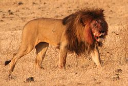

Cinco especies del género Panthera. Los leones salvajes viven en África subsahariana y Asia, con una población en peligro crítico al noroeste de la India, habiendo desaparecido del norte de África, de Oriente Próximo y del oeste de Asia en tiempos históricos.
|
 |
Hasta finales del Pleistoceno, hace aproximadamente 10000 años, de los grandes mamíferos terrestres, el león era el más extendido tras los humanos. Su distribución cubría la mayor parte de África, gran parte de Eurasia, desde el oeste de Europa hasta la India, y en América, desde el río Yukón hasta el sur de México. Si sobreviven a las dificultades de la infancia, las leonas que viven en un hábitat seguro, como por ejemplo el Parque Nacional Kruger, a menudo pueden llegar a la edad de 12-14 años, mientras que los leones raramente viven más de ocho años. |